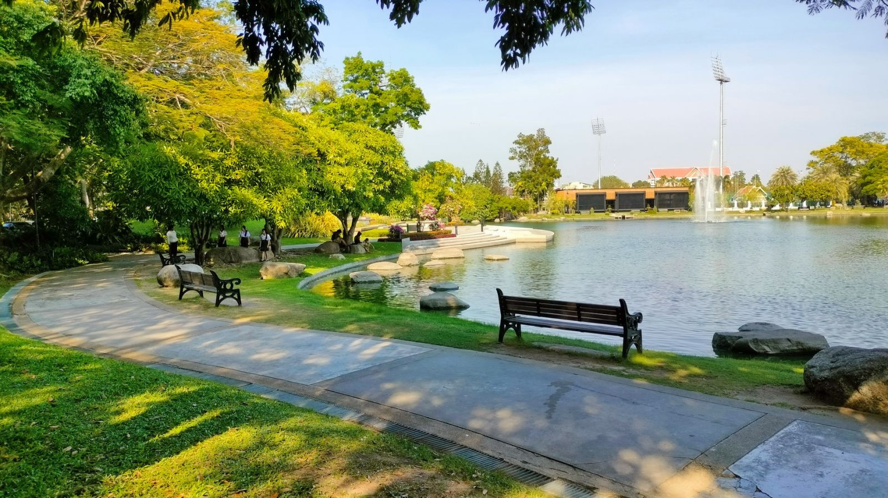
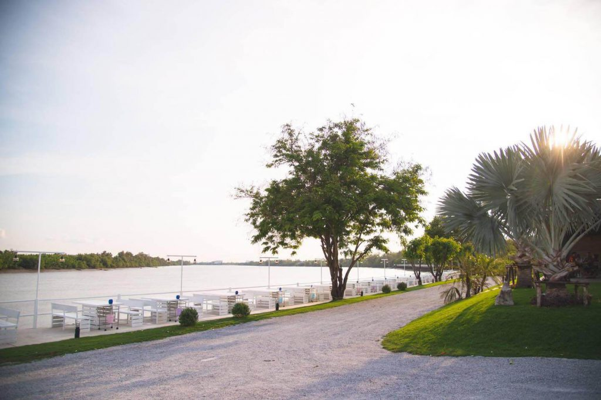
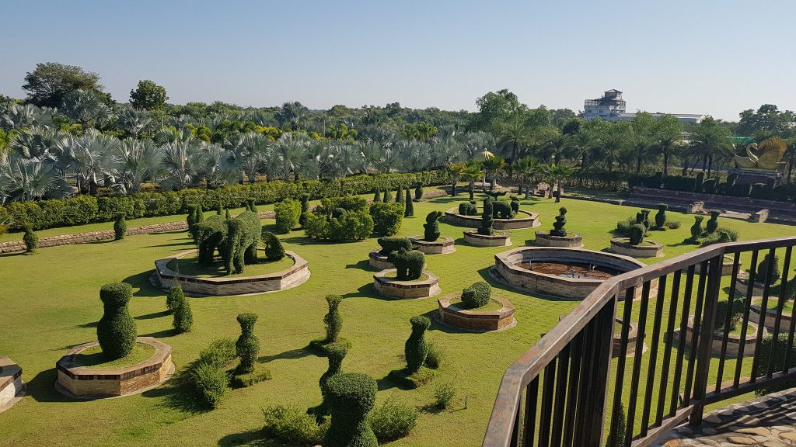

ลุ่มน้ำบางปะกง
ธรรมชาติแปดริ้ว
สายน้ำบางปะกงหล่อเลี้ยงทั้งสวนผลไม้ ทุ่งนา และวิถีชีวิตริมน้ำมาหลายชั่วอายุคน สามเส้นทางที่พาไปสัมผัสธรรมชาติของฉะเชิงเทราในแบบที่ต่างกัน

ภาพสวนสาธารณะสวนสาธารณะ
พื้นที่สีเขียวริมน้ำใจกลางเมือง เหมาะสำหรับพักผ่อน ออกกำลังกาย และชมวิวยามเย็น
อ่านต่อ →
ภาพล่องแม่น้ำบางปะกงล่องแม่น้ำบางปะกง
สัมผัสวิถีชีวิตริมสองฝั่งคลอง ชมวัดและบ้านเรือนเก่าแก่จากมุมมองบนสายน้ำ
อ่านต่อ →
ภาพสวนเกษตร/ฟาร์มสวนเกษตร/ฟาร์ม
สวนผลไม้และฟาร์มท้องถิ่นที่เปิดให้เข้าชม เก็บผลไม้ และเรียนรู้วิถีเกษตรริมน้ำ
อ่านต่อ →